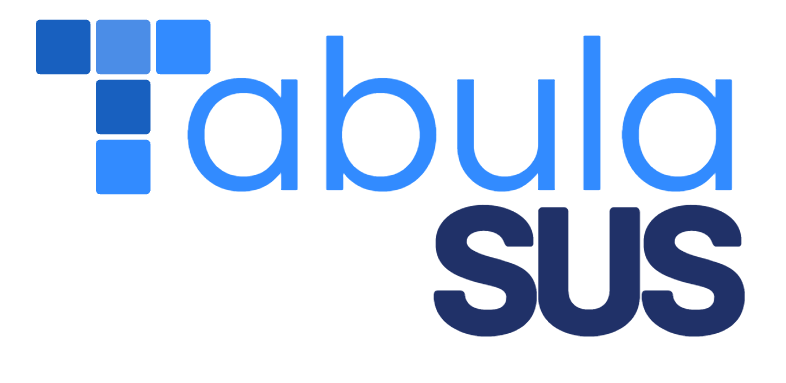

SIA/SUS · SIGTAP
Produção ambulatorial
Entenda a produção por estabelecimento, com quantidades e valores apresentados e aprovados, utilizando dados do Sistema de Informações Ambulatoriais do SUS.
Produção por estabelecimento

Saúde em dados Baixar TabulaSUSTABULAÇÃO SUS · DADOS PÚBLICOS
O TabulaSUS é um tabulador gratuito para consultar dados públicos do SUS e do DATASUS em todo o Brasil. Explore relatórios de produção ambulatorial e hospitalar, CNES, SIGTAP, vigilância, nascimentos, mortalidade, vacinação e indicadores de saúde.
Gratuito · Windows 64 bits · Instalação em um arquivo
27 UFs Cobertura nacional
5 temas Relatórios para diferentes análises
Gratuito Para usar no seu computador
O QUE VOCÊ PODE CONSULTAR
Conheça os grupos de relatórios disponíveis no TabulaSUS e encontre o recorte que faz sentido para sua análise.
Comece pelo aplicativoSIA/SUS · SIGTAP
Entenda a produção por estabelecimento, com quantidades e valores apresentados e aprovados, utilizando dados do Sistema de Informações Ambulatoriais do SUS.
Produção por estabelecimento
SIH/SUS · CNES · SIGTAP
Consulte a produção dos hospitais, a ocupação de leitos e os fluxos de internação com dados do Sistema de Informações Hospitalares do SUS.
Produção hospitalar · AIHs rejeitadas · Produção profissional por AIH · Ocupação de leitos · Origem e destino
SINAN · SIVEP-Gripe · PQA-VS
Acompanhe notificações e casos registrados em relatórios de vigilância e indicadores selecionados.
Dengue · Chikungunya · Zika · Tuberculose · Hanseníase · Sífilis · SRAG
SINASC · SIM · CNES
Consulte nascidos vivos, pré-natal, partos e perfil materno-infantil.
Nascimentos e perfil materno-infantil · Mortalidade infantil
SIM · CID-10
Explore os óbitos registrados por semana, causa básica e município de residência.
Óbitos por semana
PNI · RNDS · CNES · PQA-VS
Novidade: consulte cobertura vacinal infantil e doses aplicadas por estabelecimento, organizadas a partir de grandes bases públicas, além de indicadores selecionados de vigilância em saúde.
Cobertura vacinal · Doses por unidade · Indicadores PQA-VS
As competências e os filtros disponíveis dependem da publicação e dos campos de cada base pública.
CONEXÕES COM FONTES OFICIAIS
Além das bases do DATASUS, o TabulaSUS utiliza a tabela SIGTAP, APIs do CNES e outras fontes governamentais para complementar as análises disponíveis.
CADASTRO NACIONAL DE ESTABELECIMENTOS DE SAÚDE
Integrações com APIs e serviços do CNES complementam os relatórios com informações de estabelecimentos, profissionais e leitos, relacionando a produção à estrutura da rede de saúde.
TABELA UNIFICADA DO SUS
Consulte procedimentos, atributos e relacionamentos da tabela SIGTAP por competência. As referências oficiais ajudam a interpretar os procedimentos registrados.
API DE LOCALIDADES DO IBGE
A conexão com a API do IBGE fornece as referências de estados e municípios utilizadas na seleção e na organização territorial das consultas.
DADOS ABERTOS DO MINISTÉRIO DA SAÚDE
Novas consultas organizam dados de vacinação de grandes bases públicas em relatórios de cobertura infantil e doses aplicadas por estabelecimento. Os recortes e as fontes são identificados em cada consulta, junto aos indicadores selecionados do PQA-VS.
Cada análise utiliza as conexões pertinentes ao seu escopo. A disponibilidade e a atualização das informações dependem dos serviços e das bases oficiais.
DO SEU ESTADO. PARA SUA ANÁLISE.
O TabulaSUS busca bases públicas do DATASUS por estado e competência e atende às 27 unidades da Federação.
Voltado principalmente a gestores públicos, equipes de saúde e profissionais de regulação e planejamento, o TabulaSUS transforma consultas a dados públicos em informação para acompanhar serviços e apoiar decisões.
Em breve: TabulaStudio, uma área para pesquisadores aprofundarem análises com consultas, cruzamento de bases compatíveis, gráficos e estatísticas, aproveitando a estrutura do TabulaSUS.
A disponibilidade dos dados acompanha cada fonte oficial.
PRONTO PARA COMEÇAR
Você não precisa instalar XAMPP, PHP ou Python separadamente. Os componentes necessários já acompanham o instalador.
A instalação da nova versão leva menos de 1 minuto.
Use o botão abaixo para baixar o arquivo SPPtab-Setup.exe, para Windows 64 bits.
Execute o instalador e siga as orientações. Ele prepara os componentes do TabulaSUS.
No iniciador, clique em Abrir TabulaSUS. Escolha sua UF e o relatório que deseja consultar.
SUA OPINIÃO IMPORTA
O TabulaSUS é uma ferramenta gratuita para facilitar a consulta e a análise de dados públicos de saúde. Compartilhe sua experiência, avalie os recursos disponíveis e contribua com sugestões para futuras melhorias.
É necessário acesso à internet para buscar bases, consultar APIs governamentais e obter referências oficiais, incluindo DATASUS, CNES, SIGTAP e IBGE. A disponibilidade de cada consulta depende da fonte pública.
Não. O TabulaSUS facilita a consulta e a organização de informações públicas. As fontes oficiais continuam sendo a referência dos dados, que podem receber atualizações.
TabulaSUS, também pesquisado como Tabula SUS, é um aplicativo gratuito de tabulação e análise de dados de saúde. Ele permite organizar consultas a bases públicas do DATASUS e utilizar informações de diferentes sistemas do SUS em análises voltadas à pesquisa, gestão e planejamento.
O TabulaSUS é um tabulador SUS gratuito e independente que facilita consultas e análises de dados públicos do DATASUS. O Tabnet é uma ferramenta de tabulação disponibilizada pelo DATASUS, enquanto o Tabwin é utilizado para trabalhar com bases de dados em ambiente local. O TabulaSUS oferece uma forma complementar de trabalho, com consultas predefinidas, filtros e integração com outras fontes de informação, sem substituir os sistemas oficiais.
O TabulaStudio está em desenvolvimento como uma área dedicada a pesquisadores. A proposta é permitir consultas e cruzamentos entre bases compatíveis, com gráficos e estatísticas para aprofundar pesquisas usando a estrutura do TabulaSUS.
Sim. O TabulaSUS passou a oferecer consultas de vacinação organizadas a partir de grandes bases públicas, incluindo cobertura vacinal infantil e doses aplicadas por estabelecimento, além de indicadores selecionados de vigilância em saúde. Os resultados seguem a fonte, o período e os filtros indicados em cada relatório.
Sim. O TabulaSUS possui relatórios relacionados à produção ambulatorial do SIA/SUS e à produção hospitalar do SIH/SUS. As consultas permitem analisar informações por localidade, competência e estabelecimento, conforme os filtros disponíveis em cada relatório.
O código está no repositório oficial . Os instaladores e as notas de atualização estão na página de versões no GitHub .